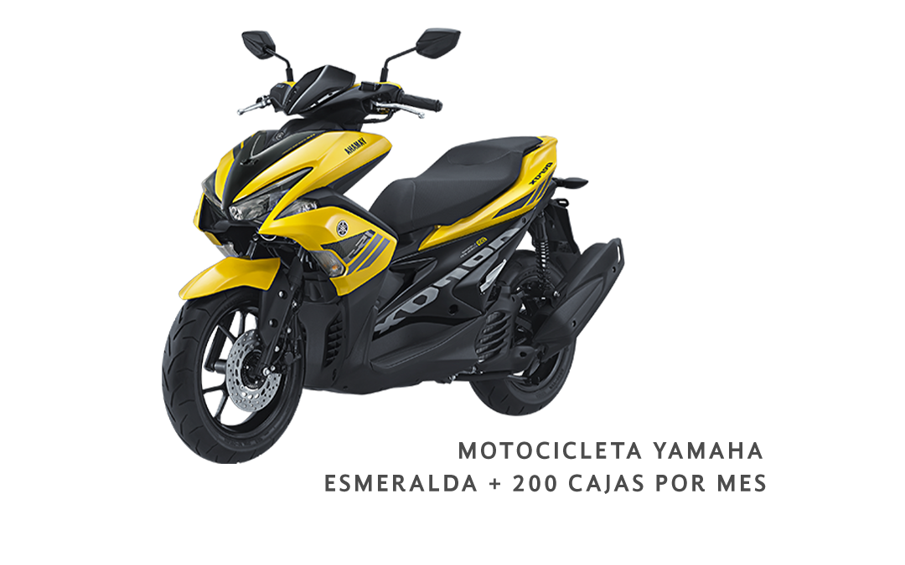
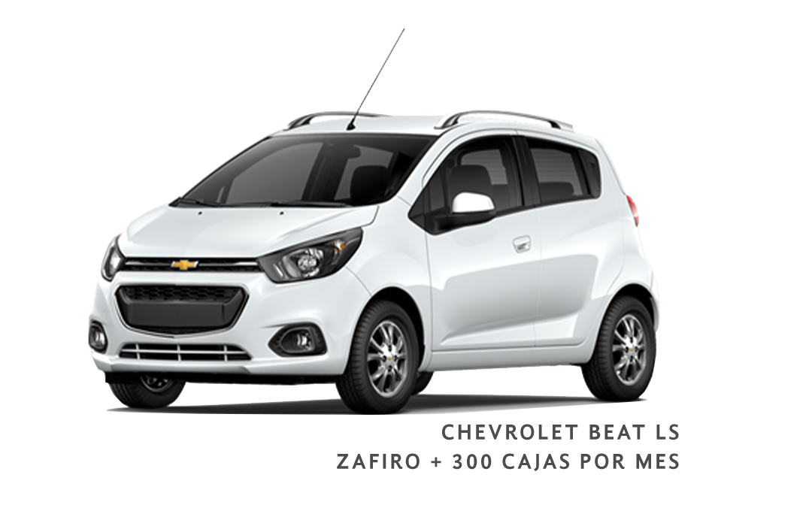
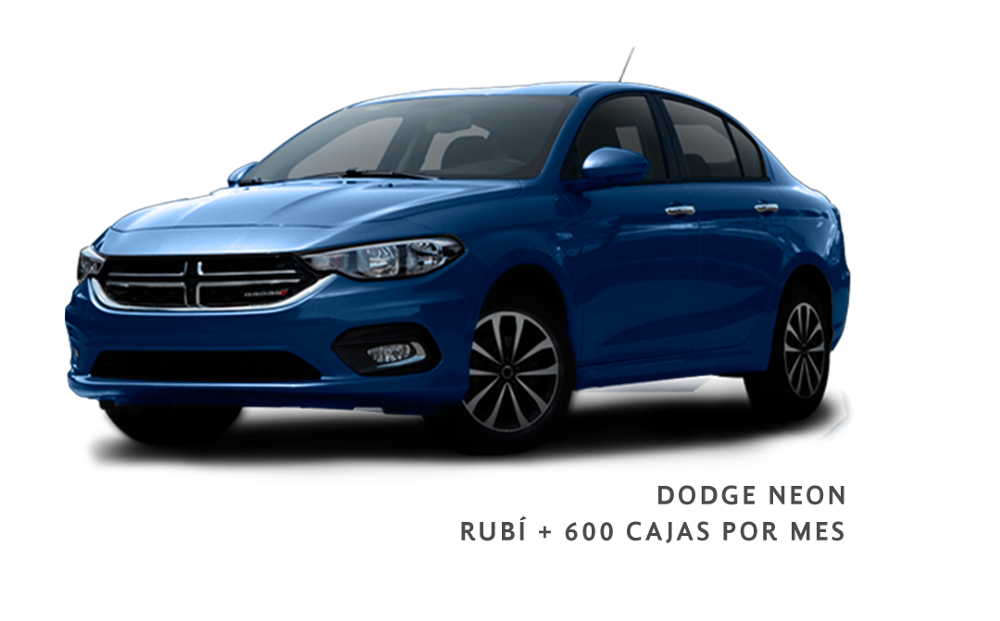
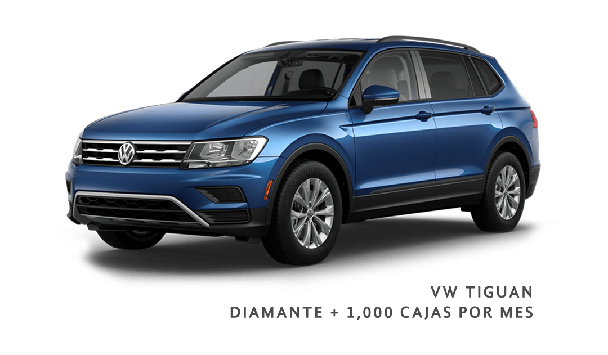
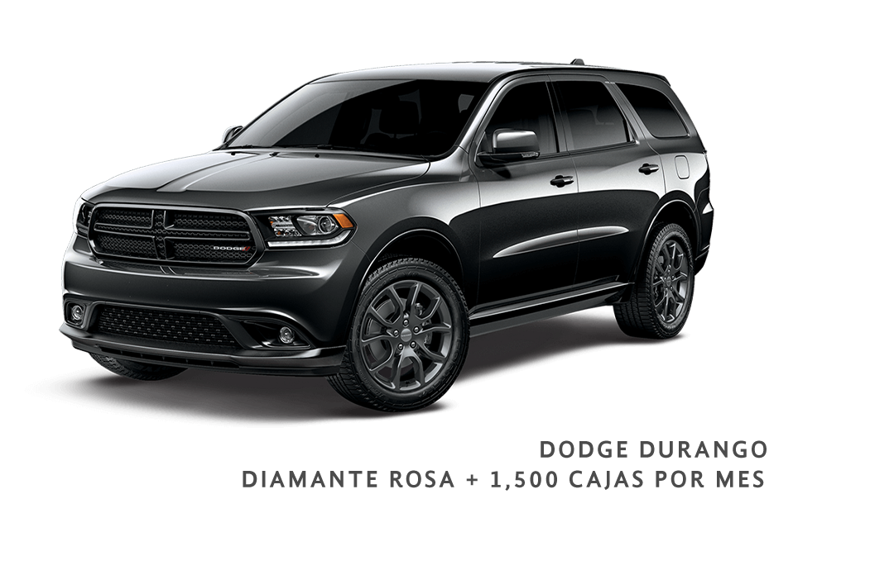
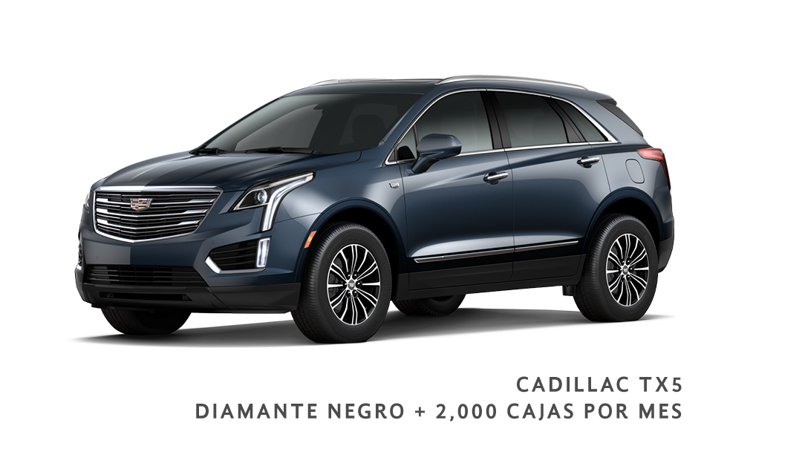

REUNIÓN DE LÍDERES Y PREMIOS SEMESTRALES
Reunión de Líderes
 Al obtener un grado podrás asistir como invitado especial a nuestra reunión de líderes anual que se llevara a cabo en una
playa paradisiaca o algún destino internacional en caso de haberlo, el cual podrá ser pagado con puntos, siempre y cuando se cumpla con las metas que se dispongan, las cuales pueden variar de acuerdo a cada evento; Este viaje puede ser
grupal o individual de acuerdo a lo que disponga el corporativo.
Al obtener un grado podrás asistir como invitado especial a nuestra reunión de líderes anual que se llevara a cabo en una
playa paradisiaca o algún destino internacional en caso de haberlo, el cual podrá ser pagado con puntos, siempre y cuando se cumpla con las metas que se dispongan, las cuales pueden variar de acuerdo a cada evento; Este viaje puede ser
grupal o individual de acuerdo a lo que disponga el corporativo.
En HGC tus premios comienzan cuando tú junto a tu red (hasta el quinto nivel) desplazan 40 cajas
y un mínimo de 8 frontales o o más por mes y se mantienen durante alguno de los 2 semestres ya
especificados. Si eres acreedor a algún grado, este se te entregará de 1 a 6 meses después de
haberlo cumplido, según el calendario de eventos que tiene la empresa para este fin
Todos los viajes de líderes se otorgarán con los puntos verdes, como mínimo debes contar con 50% de
puntos siendo negociable de otro 50%.
PREMIOS SEMESTRALES
HGC hace la diferencia y premia a nuestros distribuidores, si haz alcanzado el grado esmeralda, zafiro,rubí o diamantes y tu red de distribución ha crecido, puedes ganarte algunos de estos increíbles premios, que van desde motos, autos y camionetas. Deberás
tener previamente al menos 3 meses tu grado activo, así como cubrir el monto de cajas desplazadas junto con tu red hasta el 5º nivel por 6 meses consecutivos.





 *Modelo, color, marca y equipamiento podrán variar según existencia y criterio de la empresa. Todos los autos son de equipamiento
básico como primera opción. Para obtener algún premio debes iniciar en alguno de los 2 semestres del año sin excepción alguna (de 16 de enero a 15 de julio o de 16 de julio a 15 de enero) y el vehículo podrá ser entregado de 3 a 6 meses
después según los criterios de la empresa; la entrega de documentos según lo tenga en cuenta la empresa podrá tardar de 1 a 3 años, además de que el vehículo deberá portar publicidad de la empresa. Los regalos semestrales se otorgarán
siempre y cuando el distribuidor muestre un buen comportamiento ante el corporativo HGC y los distribuidores de la empresa, de no ser asi la empresa desistira de entregar estos premios a distribuidores desleales.
RETOS HGC
 Actívate mensualmente con 2 cajas y mantén activo tu reto
Actívate mensualmente con 2 cajas y mantén activo tu reto
RETO CONVENCION
Mantén tu reto activo del 16 de diciembre al 15 de junio y asiste gratis a la convención anual.
RETO DE FIESTA DE FIN DE AÑO
Mantén tu reto activo del 16 de junio al 15 de septiembre y asiste gratis a la fiesta de fin de año HGC
RETO AGUASCALIENTES
Mantén tu reto activo del 16 de septiembre al 15 de diciembre y asiste gratis a capacitarte en Aguascalientes.
Ninguno de estos premios incluye el traslado ya sea aéreo o terrestre, y en su mayoría
solo incluye hospedaje con desayuno incluido y eventos o cenas especiales que la empresa especificará, te recordamos que los retos son individuales e intransferibles y no aplica en inversiones.